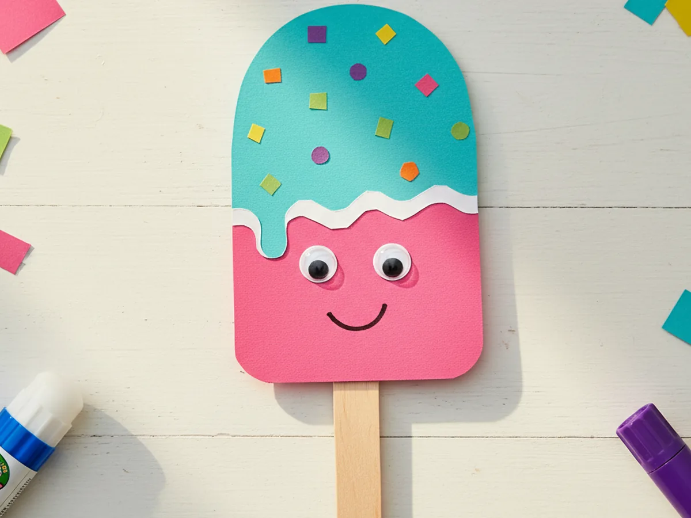
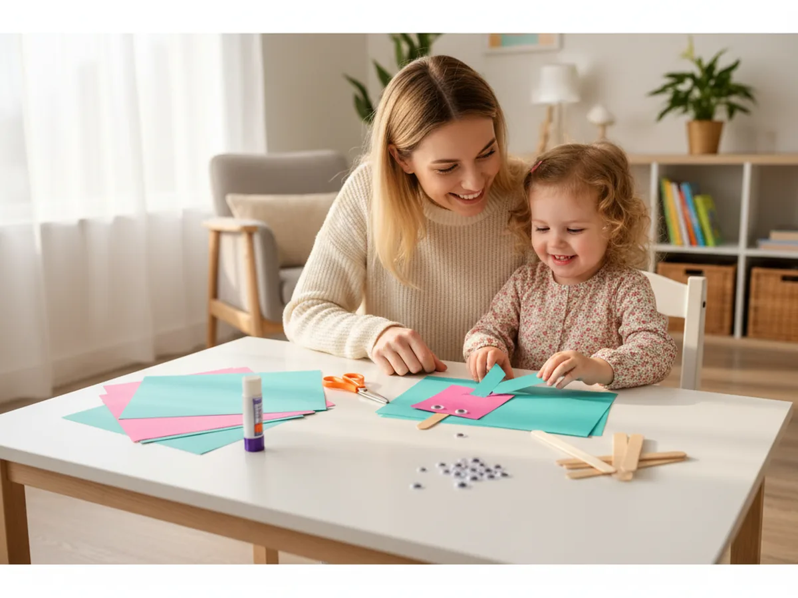
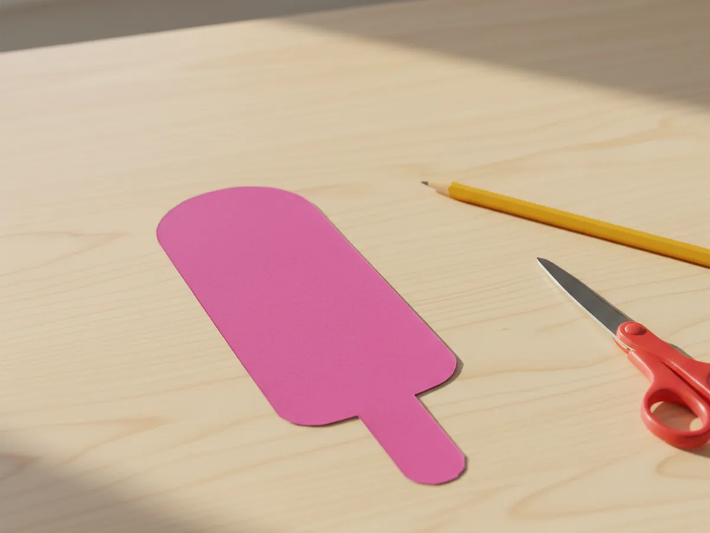
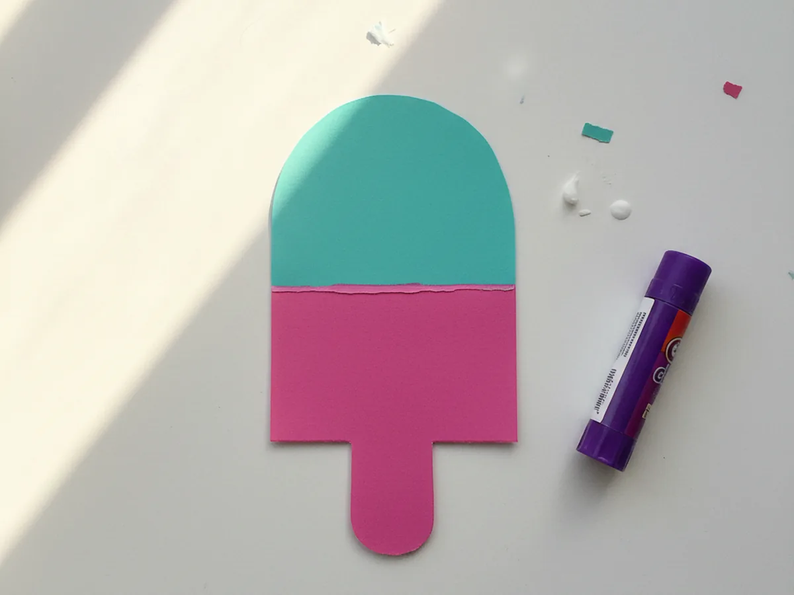
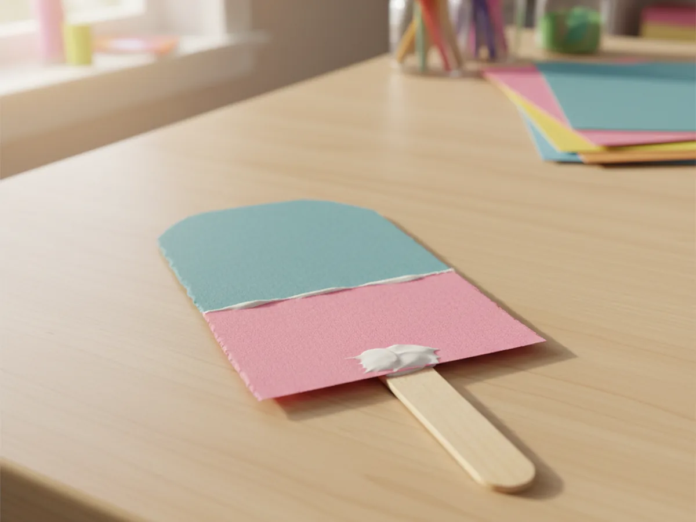
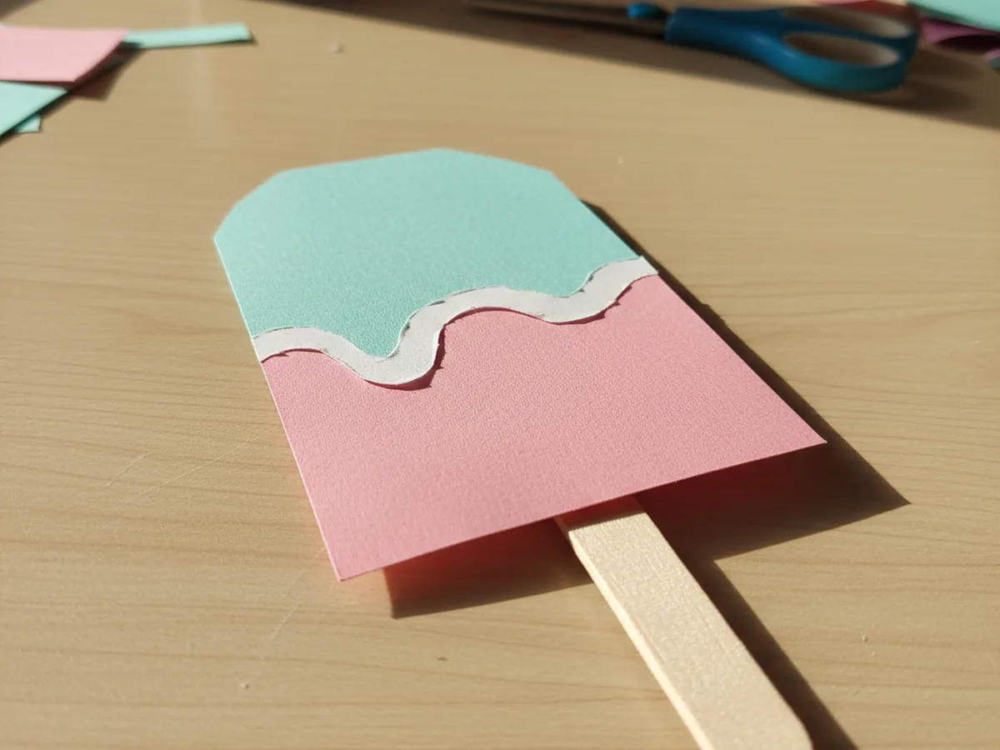
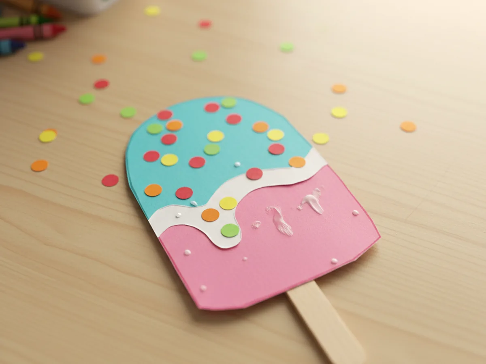
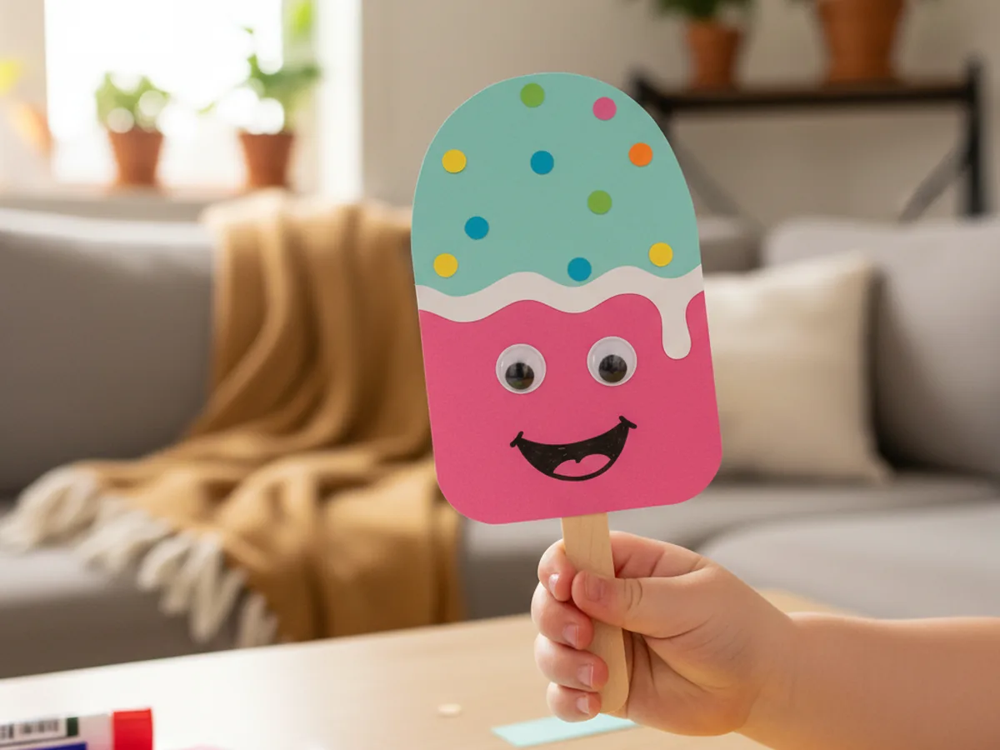

There is no treat that says summer quite like a popsicle, and this paper popsicle craft lets your little one make one that never melts. With a few squares of bright paper, a wooden craft stick, and a couple of googly eyes, you and your child can build the cutest smiling ice pop in about twenty-five minutes. No drips down sticky arms, no rush to eat it before it melts, just a sweet little keepsake you made together. 🍦
The best part about this easy paper popsicle craft is how forgiving it is. The shapes are simple, the gluing is gentle, and even if the lines come out a little wobbly, the finished popsicle still looks adorable. It is the kind of low-mess project you can pull out on a hot afternoon when going outside feels like too much, and it works beautifully for toddlers and big kids alike.
Why Kids Love This Craft
Kids light up the moment a plain piece of paper starts turning into something they recognize and love. A paper popsicle craft feels playful and a little bit silly, especially once those googly eyes and a big grin go on. Children get to choose their own flavor colors, decide where the sprinkles land, and feel like they are making a treat all by themselves, which gives them a wonderful sense of ownership.
This popsicle paper craft is also quietly good for little hands and growing brains. Cutting the rounded shapes builds scissor control, peeling and placing sprinkles strengthens that tricky pincer grip, and lining up the second flavor color encourages focus and patience. None of it feels like work to them, because to a child it is simply play.
And then comes the proud moment every mom loves. Holding up a finished smiling popsicle and saying "look what I made" is a tiny burst of joy for a young child. It is cute, it is theirs, and it is the perfect thing to tape to the fridge or line up on a windowsill with a whole rainbow of paper popsicles beside it. 💕

What You'll Need
Here is everything you need to make this paper popsicle craft at home. I like to lay the supplies out first so my little one can dive straight into the fun part.
- Crayola Construction Paper (240 sheets, 12 colors), perfect for picking bright popsicle flavor colors like pink, teal, and yellow.
- Artlicious Wooden Craft Sticks (1000 count), the real popsicle stick that becomes the handle for your paper treat.
- Fiskars 5 inch Blunt Tip Kids Scissors (3 pack), safely sized for little hands to cut the rounded popsicle shapes.
- Elmer's Washable School Glue Sticks (30 count), mess-free and easy for small hands to glue the layers and sprinkles.
- Crayola Broad Line Markers (10 classic colors), great for drawing the happy popsicle smile and any extra details.
- CCINEE Self-Adhesive Googly Eyes (assorted sizes), the finishing touch that gives your paper popsicle its sweet, friendly face.
- A pencil for lightly tracing the shapes, plus a few scraps of colorful paper for the sprinkles.
Step-by-Step Instructions
This paper popsicle craft comes together in six gentle steps that move from cutting to layering to that final happy face. Take it slow and let your child help with every part they can.
Step 1: Cut the Popsicle Shape
Start by cutting the main popsicle body from a sheet of bright pink construction paper. Aim for a tall rectangle about three inches wide and six inches tall, then round off the two top corners so it looks like a classic ice pop. This pink shape is the base of your whole paper popsicle craft, so keep the bottom edge nice and straight where the stick will go later.

Step 2: Add a Second Flavor Color
Now for the fun of picking a second flavor. Cut a rounded-top shape from teal paper that is the same width as the pink body but only tall enough to cover the upper half. Glue it neatly over the top of the pink so the popsicle now has two cheerful colors, like a strawberry-and-blue-raspberry treat. Press it down well so the edges stay flat.

Step 3: Attach the Wooden Craft Stick
Flip the popsicle over and glue a wooden craft stick to the back at the bottom center, letting about two inches poke out below the paper just like a real handle. A glue stick works for a quick hold, but a small dab of white school glue will keep it extra sturdy for little hands that love to wave their creation around.

Step 4: Add a Drippy Topping
Turn the popsicle face up again and cut a thin wavy strip of white paper. Glue it along the line where the teal flavor meets the pink so it looks like a soft, melty drip running down the treat. This little detail instantly makes the paper popsicle craft look sweet and creamy, and kids love that it pretends to drip without any real mess. 🌈

Step 5: Glue On Paper Sprinkles
Time for sprinkles. Snip tiny dots or short little strips from scraps of colorful paper, then glue them across the teal top of the popsicle. Let your child scatter them however they like, because a few crooked sprinkles only make this simple paper popsicle craft look more playful and handmade. A little glue goes a long way here.

Step 6: Add a Happy Face
Finish your paper popsicle craft by sticking two googly eyes onto the pink part of the popsicle and drawing a big happy smile underneath with a marker. Suddenly your little ice pop has a personality all its own. Give it a name, line it up with the others, and watch your child beam at the cheerful treat they made with their own hands. ✨

Variations to Try
Tissue Paper Snow Cone: Swap the flat paper layers for a paper cone filled with crumpled bits of bright tissue paper. The fluffy texture turns the craft into a colorful snow cone that feels soft and three dimensional.
Healthy Fruit Pop: Make the body a soft purple or red and glue on tiny paper berry shapes and a green paper leaf at the top for a fruity ice pop. It is a fun way to chat with your child about their favorite real fruits while you craft.
Sparkle Glitter Popsicle: For older kids who love a little shine, brush a thin line of glue along the drip and shake on some fine glitter before adding the sprinkles. The result looks like a frosty, frozen treat that catches the light.
Final Thoughts
This paper popsicle craft is one of those easy little projects that turns an ordinary afternoon into a sweet shared moment. Simple shapes, a few cheerful colors, and a friendly smiling face are all it takes to make your child feel proud and happy. Make one, make a whole rainbow batch, and enjoy the giggles as your little one shows off a summer treat that will never, ever melt. 🌞
More Crafts You'll Love
If your child loved this paper popsicle craft, these other sweet summery paper projects are perfect to try next: